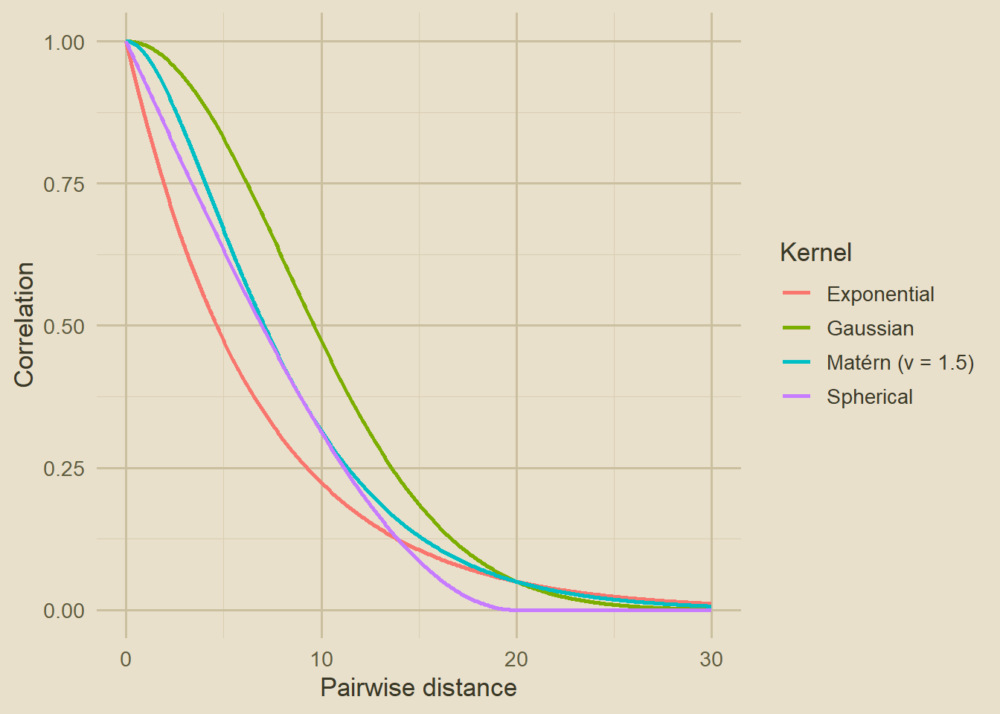
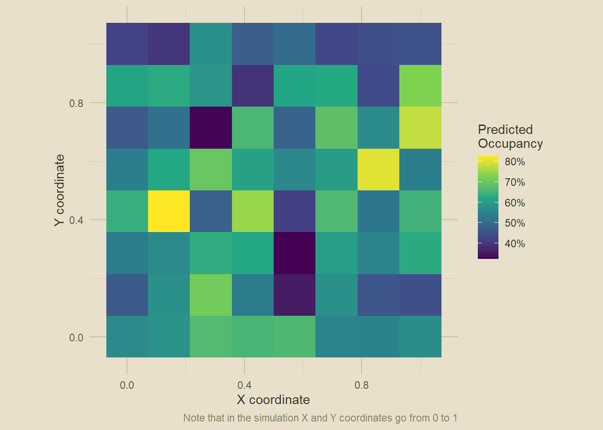

Imagine you’re surveying a species across a landscape. You visit dozens of locations, scattered across a region, recording whether or not the species is detected. Now, these sites don’t exist in a vacuum; at each site there is some sort of underlying habitat quality. Here’s what your landscape and survey locations might look like:
We have some sites that are in “good” habitat (yellow-ish cells) and some that are “bad” (blue cells). (Keep in mind that I’m being lazy by calling this “habitat quality”, this might be something like tree cover, or soil nutrients, or prey abundance etc.). Importantly, like most real world habitats, the habitat changes gradually - we don’t go from extremely high quality to extremely low quality in 1 cm. It decays (or improves) slowly over distance.
In any case, we go place our cameras in the landscape (the black dots) and collect our data.
Let’s say we then take this data and fit a model to understand how features of the habitat (e.g. distance to roads) influences occupancy. For now, let’s say we know the Truth that distance to road does influence occupancy. However, when looking at your hypothetical results, you might notice something odd:
Two nearby locations that have completely contrasting covariate values have very similar occupancy probabilities (e.g. Site A might be very far from a road while Site B is adjacent but both have 62% predicted occupancy).
Conversely, two other sites which are very far apart from each other but have identical covariate values show totally contrasting predicted presence and absence (e.g. Site C is 10 m to the nearest road and Site D is also 10 m but Site A has 6% occupancy and Site B has 87%).
What’s going on here? How is the relationship being obscured to us? It’s happening because we are missing something from our model, and therefore breaking an assumption.
What is Spatial Autocorrelation?
Spatial autocorrelation refers to the phenomenon where data (e.g. habitat, detections, weather) collected at nearby locations tend to be more similar (or dissimilar) than those collected at distant locations. In the context of species occupancy, this means that whether a species is present at one site may provide information about its presence at nearby sites.
Consider how we could describe this. For any site we choose, it will be perfectly correlated with itself. If the trees are tall in Site A that correlates perfectly with Site A that has tall trees. So simple and stupid that it might be confusing; All sites are perfectly correlated with themselves.
In truth, we don’t particularly care about that, but it’s never-the-less true. What’s of more interest is how two different sites are correlated with each other. For example, Site 1 and Site 2 may have a correlation of 0.42. Site 1 and Site 3 is maybe 0.63. And so on, and so on.
It gets pretty miserable to write that out in text. Thankfully, there’s a convenient way to write this. Let’s see what that might look like for our ten sites from the example above:
This is something called a correlation matrix. Each row and column represents a site (in this case); \(S1\) is Site 1, \(S2\) is Site 2, and so on. The values, between -1 and 1, represent the correlation between \(S_i\) and \(S_I\). Notice that Site 1 is perfectly correlated with itself? That’s good. We said it should be. Your height is perfectly correlated with your height. Like we said above, the more interesting part is when we look at different sites. For example, \(S1\) and \(S2\) have a correlation of 0.42. \(S1\) and \(S3\) is 0.63. \(S2\) and \(S3\) is 0.39. This shows that sites 1 and 3 are very similar to each other.
The lower triangle of the matrix is left empty to reduce clutter but it is simply a mirror of the upper triangle. The Diagonal is how much sites correlate with themselves.
Looking at these correlations, our question may be: Are these correlations because they are close to each other in space? Is that why they’re so similar?
To answer this we need one last piece of information: something called pairwise distance. Pairwise distance is simply the distance between a pair of sites. As simple as that.
If we have both pieces of this information, we can estimate spatial autocorrelation at increasing pairwise distances. This can take various forms but here are some examples of what this may look like:
The figure above shows how the similarity between nearby locations could change as the pairwise distance between them increases in three hypothetical scenarios. These three lines are examples of spatial autocorrelation, the idea that sites close to each other tend to be more alike than places far apart.
The grey line shows a world where there’s no spatial pattern, or clustering, at all: knowing what happens at one site tells you nothing about another, no matter how close. In reality, this is pretty rare in ecology. Animals move, plants disperse seeds, and environments like soil, moisture, and temperature usually change gradually. That means sites next to each often share similar ecological conditions and as a result, can likely influence occupancy (and really most things we could measure in the real world).
The red line, fast decay, might reflect species with small home ranges or patchy habitats. For instance, frogs that only live in isolated wetlands may show very different occupancy just a few kilometers apart. The blue line, slow decay, could reflect species that occupy large territories or respond to broad environmental gradients. Think of a forest-dwelling bird that ranges over many square kilometers; if it’s present in one forest patch, it’s probably also in other adjacent forest patches.
Whether spatial autocorrelation fades quickly or slowly matters. If it fades slowly and we ignore it, we might wrongly assume we have lots of independent data when really we’re just seeing the same pattern repeated locally. That can lead to overconfident conclusions and poor predictions. Understanding how fast that decay happens helps us choose the right tools to model and account for it.
Strategies for Addressing Spatial Autocorrelation
There are several strategies for dealing with spatial dependence in ecological models. We’ll only be using one of these in spOccupancy but these are some of the generic options:
Spatially explicit covariates: Sometimes the cause of spatial autocorrelation can be explained by including the environmental covariates in the model. In some cases, adding relevant covariates (e.g. distance to road) can reduce spatial structure in residuals. (But this can sometimes create correlation issues, or at least fail to solve them).
Autocovariate terms: Including information about neighboring sites (e.g., average response of nearby locations) can account for local similarity.
Spatial random effects: Something called random effects that are spatially structured (e.g., using Gaussian Processes or Conditional Autoregressive models) can capture residual spatial correlation.
Eigenvector-based methods: Moran’s Eigenvector Maps (MEMs) or Principal Coordinates of Neighbor Matrices (PCNM) are techniques to generate spatial predictors from location data.
The option we’ll use
We’ll be going with the random effect option in spOccupancy. This approach includes a “hidden” or latent spatial surface (note latent here means that we estimate it from the data, in much the same way that we estimate parameters [parameters are also latent]). This surface acts like a flexible backdrop that captures patterns shared by nearby locations; patterns that our measured covariates might miss. For example, if two neighbouring sites have similar occupancy not just because of vegetation or distance to roads but because of unmeasured factors like microclimate or local dispersal, the spatial surface helps model that.
This spatial surface is modeled using something called a Gaussian process. You can think of this like drawing a smooth, continuous layer over the landscape that reflects spatial trends in occupancy. Locations that are close together share more of this spatial effect than distant ones, which mimics the idea of spatial autocorrelation.
To get into the details, let’s see what it looks like we’ll go back to the occupancy model we fit in the previous page. I’m leaving the priors out just to keep things clean. As a reminder, the model we fit said that tree height and temperature caused elephants in Etosha to be more or less likely to be present, and we said that the amount of rain caused us to be more or less likely to detect elephants.
You’ll see that there are a couple of new additions to our equations:
\(w_i\) which is the spatial effect for site \(i\), and is shared across all surveys at that site. This is within the deterministic part of the state model of what influences whether or not elephants are present.
\(w_i\) is drawn from a type of distribution that will be new to you - the Multivariate Normal distribution (more on this in a bit).
\(\Sigma\) is the covariance matrix capturing spatial structure (similar to the matrix further above).
\(C(d_{ij})\) is the spatial correlation function based on the pairwise distance (\(d\)) between site \(i\) and site \(j\).
The problem is that fitting this kind of model can get computationally expensive, especially when we have lots of survey locations. In such cases, to make it faster and more scalable, spOccupancy allows using a method called a Nearest Neighbour Gaussian Process. Instead of using every other location to estimate the spatial effect at a given point, it uses just a few of the closest sites, say, the 15 nearest neighbours. This simplifies the maths without losing much accuracy.
Different options are available for how this spatial relationship is modelled, like assuming it fades gradually with distance (exponential), has a specific shape (spherical), or includes more complex flexibility (Matérn). These choices control how quickly the spatial correlation drops off with distance, and the method can be adapted depending on the species, the landscape, and the data.
This approach allows us to model both what we know (through measured covariates) and what we don’t (through spatial patterns), all while accounting for imperfect detection. The result is a model that makes better use of the data, gives more realistic uncertainty, and is especially helpful when making predictions across a broader landscape, even in places we didn’t sample directly.
Choosing the right kernel
When including a spatial random effect, we need to choose the right model (or “kernel”) for them. Should we fit a straight line? A sigmoid? Should the relationship do a backflip? Well as mentioned above, in soOccupancy, we’re limited to the four classic options; Exponential, Spherical, Gaussian or Matérn.
Here’s what they look like:
Code
exp_corr <-function(d, range) exp(-log(20) * d / range)gau_corr <-function(d, range) exp(-(sqrt(log(20)) * d / range)^2)sph_corr <-function(d, range) { r <- d / range; out <-1-1.5*r +0.5*r^3; out[d > range] <-0; out }matern_corr <-function(d, range, nu =1.5) { core <-function(h, nu) { out <- (2^(1- nu) /gamma(nu)) * (h^nu) *besselK(h, nu); out[h ==0] <-1; out } rho <-uniroot(function(r) core(range / r, nu) -0.05, c(1e-6, 1e6))$rootcore(d / rho, nu)}range_eff <-20d <-seq(0, range_eff *1.5, length.out =400)df <- dplyr::bind_rows(tibble(distance = d, correlation =exp_corr(d, range_eff), kernel ="Exponential"),tibble(distance = d, correlation =sph_corr(d, range_eff), kernel ="Spherical"),tibble(distance = d, correlation =gau_corr(d, range_eff), kernel ="Gaussian"),tibble(distance = d, correlation =matern_corr(d, range_eff, nu =1.5), kernel ="Matérn (ν = 1.5)"))ggplot(df, aes(distance, correlation, color = kernel)) +geom_line(linewidth =1) +labs(x ="Pairwise distance", y ="Correlation", color ="Kernel") +theme_dark_site(base_size =13)

Notice how they’re subtly different to each other? I mean, they’re not crazily different but those small differences can matter. So which should you choose?
Well in practice, you generally start with the Matérn. The Matérn has a bit more flexibility than the other kernels, so can generally adjust a bit better to match the data. If you had loads of time, you might then fit the other options and check which seems to fit best with the data (generally by comparing how well they predict the data you used to fit the model).
For you guys, I’d say just fit it with Matérn. If every seems sensible, then move on with your life. If the model seems really bad (for any number of reasons) try switching to one of the other options.
Summary so far
Spatial data usually exhibit spatial autocorrelation, so observations are not independent (remember the assumption of independence?).
spOccupancy handles this with a spatial random effect which is included in the state model (i.e. are species present or not?).
We start by choosing a kernel (e.g. Matérn) that describes how pairwise correlation relates to pairwise distance.
Pairwise distance between all sites is calculated \(d_{ij}\) and stored in a matrix \(\mathbf{D}\)
We put a Gaussian process prior on \(w\) in the model, \(w \sim MVN(0, \Sigma \theta)\). Here \(\Sigma\theta\) is equal to \(\sigma^2 \times \mathbf{C}\theta\) where \(\sigma\) is standard deviation (just like in the “normal” \(\text{Normal}\) distribution)
The Gaussian process prior allows each site to be a little different than we might expect, based on it’s distance to other sites, but we assume there is some sort of global average (the zero in \(MVN(0, \Sigma \theta)\)) that all sites are “pulled” towards that global average (the \(\Sigma\) in \(MVN(0, \Sigma \theta)\)).
All we have to do is fit an occupancy model with an appropriate spatial random effect.
Fitting a spatial occupancy model
We’ll return to the elephants in Etosha to show how to fit an occupancy model with a spatial random effect. As a reminder, temperature and trees determined if elephants were present or not, while rain determined if we saw elephants or not. We still have 64 sites.
We fit the model in almost the same way. The only difference this time is that space is incorporated into the model.
To do so, we need to include the coordinate of each site in the etosha list. In this simulated data, the coordinates are a bit weird in that they range from zero to one. This is not like yours, which will need to be in UTM (Universe Transverse Mercator), where each unit corresponds to one meter. However, most likely, you’ll have latitude and longitude, which you’ll need to convert into UTM. It’s a bit fiddly but thankfully there are lots of resources online to walk you through the process, so do a quick search (e.g. see here).
Once you’ve got your coordinates projected into UTM, and your data organised, we’re almost ready to begin. The last thing we need to do before the model changes is add a prior for the kernel. In the model below I use a Matérn kernel, which requires a prior for \(\nu\) (or nu), which controls the smoothness. When \(\nu = 0.5\), then it becomes the equivalent of a rough exponential kernel but as \(\nu\) increases the kernel becomes smoother and smoother; As \(\nu\) approaches infinity it basically becomes the Gaussian kernel (hence, why Matérn is a very flexible kernel to use). The prior for \(\nu\) is drawn from a \(\text{Uniform}\) distribution, with a minimum and maximum, so a reasonably seasonable range for it in the model below might be 0.5 to 2.5, though the maximum could arguably be larger to allow it to reach the Gaussian kernel if needed.
We can then fit the model using the function spPGOcc(), which works in a very similar way as PGOcc() except that this version has space (hence the sp). There are two meaningful changes to the code:
We need to specify the kernel (or covariance model, or cov.model). As mentioned above, given this is for your projects, start with Matérn (or "matern") and only change if you have good reason to.
We need to tweak how we specify the number of iterations the MCMC is allowed to run. Previously we used n.samples but now we use two arguments, n.batch and batch.length instead. The reason for this is a bit too technical to concern ourselves with here, so imagine it as chopping up n.samples into smaller, more easy to handle batches. This means we need to say how many batches we want, and how long each batch is. You can multiply the two together to give yourself an idea of how many iterations you are running the model for.
In the model below, I use cov.model = "matern",n.batch = 200 and batch.length = 50 (giving 5,000 iterations per chain).
We can pull the fit of the model, just as before, except this time note that you have the parameters estimated for the Matérn kernel. We don’t need to do anything with that explicitly, but we can confirm that there are no issues with how these were estimated.
A nice thing we can do, given the model above, is to plot the predicted occupancy out over space. Here’s how you can do it, but keep in mind that in the example below (and the simulation) we have data for each coordinate. You probably won’t have this in your data (unless you are extremely lucky) so your figure will look more patchy.
However, if you were able to get occupancy covariates for each coordinate from a grid, you could make this figure with your own data. If you are interested in doing this, then just get in touch.
Code
library(dplyr)library(ggplot2)X.0<-model.matrix(~ tree + temp, data = etosha$occ.covs)pred <-predict(fit, X.0 = X.0, coords.0 = etosha$coords, verbose =FALSE)psi_mean <-colMeans(pred$psi.0.samples) # Posterior mean for occupancyplot_df <-tibble(x = etosha$coords[, 1],y = etosha$coords[, 2],psi = psi_mean)ggplot(plot_df, aes(x, y, fill = psi)) +geom_tile() +coord_equal() +scale_fill_viridis_c(labels = scales::percent) +labs(x ="X coordinate", y ="Y coordinate", fill ="Predicted\nOccupancy",caption ="Note that in the simulation X and Y coordinates go from 0 to 1") +theme_dark_site()

I won’t do it here, but you can also make the exact same figures as in the previous pages. Just follow the same steps.
The end
And that’s it. You now need to figure out what this evidence tells you about your system. Are elephants more likely to occupy sites with lots of trees? If so, what does that tell you about their biology? What does it tell you about their conservation?
Think carefully about what your results actually mean. Take a step back from the modelling and think what you’ve learnt about biology. What changes in the world now that you’ve learnt this? Should we add more trees to Etosha? Should we direct anti-poaching efforts in grasslands? Just keep it grounded in your evidence. And definitely don’t go on tangents (e.g. if you never included tourist numbers in your model, don’t start talking about any potential tourist impacts on elephants). Keep the discussion of your results grounded! You don’t need to over- or undersell the importance of your result.